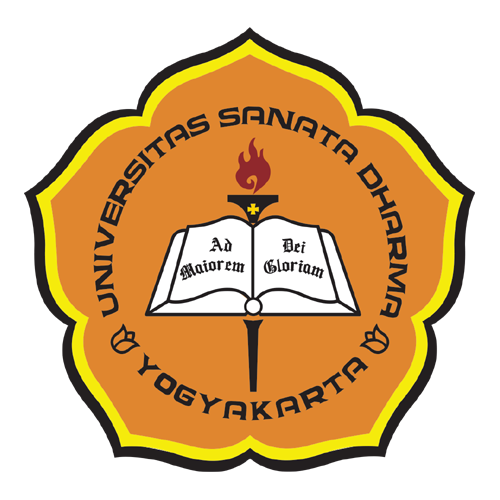

Halo! Perkenalkan, nama saya Tumba TL Sihombing. Saya adalah mahasiswa aktif di Program Studi Informatika, Universitas Sanata Dharma. Saya memiliki ketertarikan yang besar dalam bidang teknologi dan pemrograman. Saya sangat tertarik mempelajari bagaimana sistem komputer bekerja, bagaimana website dibuat, dan bagaimana teknologi dapat membantu kehidupan manusia.
Saya adalah pribadi yang memiliki semangat belajar yang tinggi dan selalu berusaha untuk terus mengembangkan kemampuan saya. Saya percaya bahwa dengan kerja keras, disiplin, dan konsistensi, saya dapat mencapai tujuan saya menjadi seorang programmer profesional. Saya juga senang mempelajari hal-hal baru yang dapat meningkatkan pengetahuan dan pengalaman saya.
Selain fokus pada bidang akademik, saya juga memiliki beberapa hobi yang saya sukai. Saya memiliki hobi memasak, karena memasak membuat saya merasa kreatif dan senang mencoba berbagai resep baru. Saya juga memiliki hobi menyanyi, karena menyanyi membantu saya mengekspresikan diri dan memberikan rasa rileks. Selain itu, saya juga sangat menyukai traveling, karena saya dapat mengunjungi tempat-tempat baru, menikmati keindahan alam, dan mendapatkan pengalaman yang berharga.
Tujuan saya adalah menjadi seorang programmer profesional dan dapat membuat aplikasi yang bermanfaat bagi banyak orang. Saya berharap dapat menggunakan kemampuan saya untuk memberikan kontribusi positif dalam dunia teknologi.
| Nama | NIM | Program Studi | Universitas |
|---|---|---|---|
| Tumba TL Sihombing | 245314001 | Informatika | Universitas Sanata Dharma |
| Nama Mata Kuliah | Kelas |
|---|---|
| Analisis dan Strategi Algoritma | A |
| Interaksi Manusia dan Komputer | B |
| Kewirausahaan | D |
| Komputasi Paralel dan Terdistribusi | A |
| Manajemen Informasi | D |
| Pembelajaran Mesin | B |
| Pemrograman Berbasis Platform | A |
| Pendidikan Kewarganegaraan | X |
| Rekayasa Perangkat Lunak | D |
Kunjungi Website Universitas Sanata Dharma
Website Profil Mahasiswa
Tumba TL Sihombing
NIM: 245314001